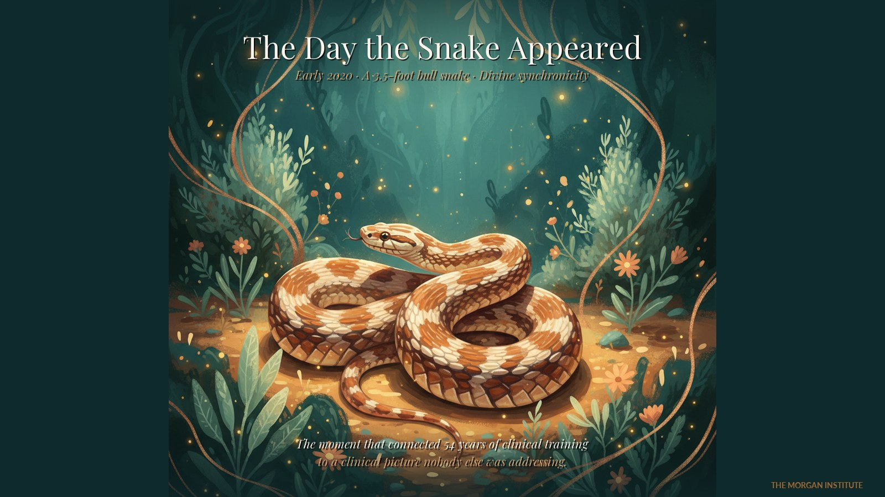
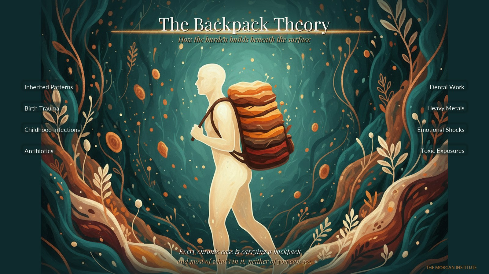
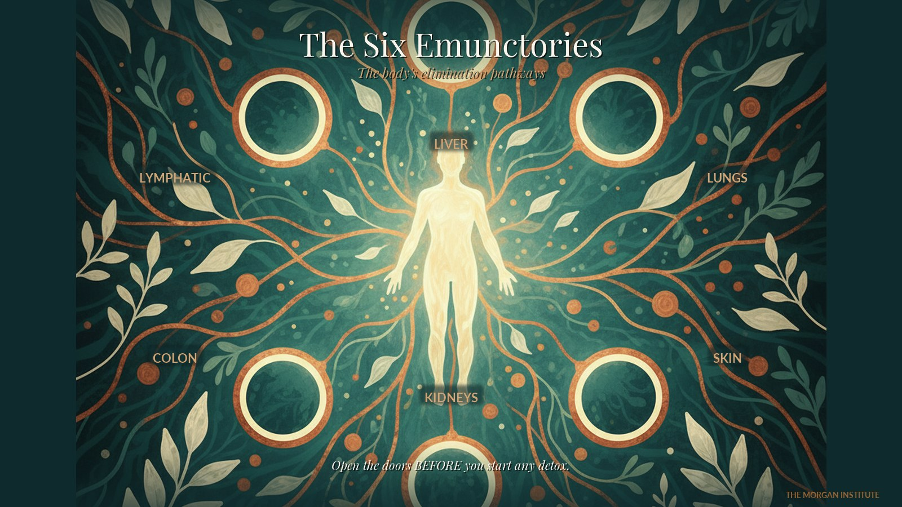

An Open Letter to Licensed Practitioners
"Drowning in Long COVID and Vaccine Injury Cases You Can't Solve? Read This Letter."
After 54 years in clinical practice, I'm finally teaching the snake venom homeopathy framework that took my long-haul patients from 30% functional to 80–90% recovered — to 15 practitioners. Only 15.
From the desk of Vanessa Morgan, L.Ac.
Taos, New Mexico
Dear Practitioner,
If you've been treating patients since 2020, you already know what I'm about to write.
The cases have changed. Long COVID. Vaccine injury. Spike protein damage. Mast cell activation. Post-viral neurological symptoms. Autoimmune flare-ups that don't respond to anything in your toolkit. 17.8 million Americans are now suffering from long COVID alone — and the integrative training that got you here doesn't reach them.
You know it. They know it. They've been to six practitioners before they get to you. They've spent $20,000 trying to feel like themselves again. They've been told it's anxiety. By the time they sit down across from you, they're not just sick — they're heartbroken.
It isn't your skill. It isn't your dedication. It's a clinical layer almost no school in this country teaches you to reach.
Instead, you've implemented what you know.
That slow erosion is the part nobody talks about at the conferences. The 3 AM conversations with yourself where you start to wonder: am I actually helping anyone, or am I just managing decline?
I want to tell you what changed everything for me, and why I'm finally, after 54 years of practice, opening the doors of my clinical work to 15 practitioners.
The Day a Snake Walked Into My Yard

Early 2020 · Taos, New Mexico · the moment that connected 54 years of clinical training to the work I'm doing now. A 3.5-foot bull snake appeared — a divine synchronicity.
In early 2020, just before the COVID vaccines began rolling out, a 3.5-foot bull snake appeared in my yard in Taos, New Mexico.
For someone who spent years studying the symbolism of medicine across cultures, that wasn't a coincidence. It was an instruction. And I followed it — straight into the most cutting-edge clinical work of my career.
What I found, after two years of intensive study and clinical experimentation, was this: there is a class of homeopathic remedies derived from snake venoms that has been sitting in the pharmacopoeia since 1828 — quietly, almost invisibly — and it has a unique ability to reach a clinical layer that almost nothing else can touch.
And it turns out the timing of that snake was exactly right.
A team of Italian researchers later identified 32 to 34 snake venom peptides in the bloodstream of COVID-positive patients — a finding that helped explain why these patients were responding to homeopathic snake venom preparations in ways no other modality could match. The symptom picture and the remedy were already related at the molecular level. We just hadn't connected them yet.
What Started Happening in My Practice
Over the next several years, I refined the protocols. I tested them against the hardest cases I'd ever seen. And the pattern became unmistakable:
Patients who had been 30% functional were getting back to 80–90% recovered.
Long-haul COVID. Vaccine injury. Chronic neurological symptoms. Autoimmune flares. Cases that had failed every other functional and integrative approach.
I'm not going to give you exaggerated language about it. I'm going to tell you simply: this is the most consistent clinical work I have ever done in 54 years of practice, and I have done a lot of clinical work.
It is also work that nobody else in the United States is teaching to practitioners. I checked again last month. Zero certification programs. Zero structured training. Zero.
That's why I created The Morgan Institute.
There Is a Sequence — and Most Practitioners Skip It
Before I tell you about the certification, I want to give you something you can actually use. Because the framework I teach starts with a sequence almost nobody applies — and getting that sequence right is the difference between a patient who finally moves and a patient who plateaus forever.
I use a metaphor with my students: every patient is walking around with a backpack. Inside that backpack is everything unresolved they've accumulated across their lifetime — inherited patterns, birth trauma, childhood infections, antibiotics, dental work, heavy metals, emotional shocks, toxic exposures. The body compensates silently for decades. Until it can't.

Every chronic case is carrying a backpack — and most of what's in it, neither of you can see.
The first thing I do with every chronic case is map the timeline. What's in their backpack? What's at the bottom? When did the body start compensating, and for what?
Another aspect that is often overlooked is the importance of opening the elimination pathways before we can go deeper.

Open the doors first. This is the single most common mistake practitioners make with chronic cases.
This is the step most practitioners skip. They start moving toxins before the body has a way to eliminate them — and the patient gets sicker. It's a traffic jam inside the body, and it's why so many "detox" protocols backfire on the patients who need them most.
[ Seven Factors That Influence Health — chart pending from Vanessa ]
Placeholder: chart to be supplied and color-matched to site palette.
In my course, Principles Not Protocols, I will take you through an in-depth understanding of each of these factors so you can create an effective, individualized protocol that allows you to meet the unique needs of your patient and get the clinical results you're seeking.
Why I'm Finally Teaching This
I'm 70 years old. For 54 years, I've sat across from sick people and slowly figured out what actually works at the deepest layer of disease.
I began my study of natural medicine when I was 17 years old. I've dedicated my entire life to being of service to others. I've traveled to study in China, Germany, England, Canada, and all over the US to get the best training with practitioners who were experts in their field. And I've learned as much from sitting across from sick people, slowly figuring out what actually works at the deepest level of disease. All of that knowledge currently lives in exactly one person — me. I'm not being dramatic. I'm being accurate. There's no textbook for what I do. There's no degree.
And that keeps me up at night more than any case ever has.
I was ready to retire, and then COVID happened. It became clear to me, after the venom medicine evolved, that I need to share this important work with like-minded healers — those who, like me, have the same inner calling to support others on their healing journey.
So this year, for the first time in my career, I'm opening fifteen seats in a 12-month clinical mentorship called The Serpent's Path.
Not a course. Not a video library. Not a weekend certification. A direct clinical apprenticeship — with me, in real time, on your real cases — the way healing has been taught for thousands of years.
What I'm inspired to teach is not just about techniques. It encompasses the true art of healing.
Here's Everything You Get When You're Accepted
- Seven Factors That Influence Health — your roadmap to clinical success. Includes the complete program Principles Not Protocols: A Whole Systems Approach to Healing. Learn how I evaluate each case.
- How to identify and remove obstacles to cure.
- My updated, revised Venom Medicine training — the full Snake Venom Materia Medica: every remedy I use clinically, with potency selection, case-matching criteria, and protocols built for post-viral and vaccine injury cases.
- My checklist for evaluating each patient — what I call what is necessary IN ORDER TO BE WELL.
- 24 live mentorship sessions with me directly — not pre-recorded lectures. Real-time supervision on your real cases.
- Two in-person clinical immersions — because some things can only transfer through proximity. You'll watch me work, ask me anything, and feel the cases the way I feel them.
- The Morgan Clinical Decision Framework — a printable thinking tool you can pull out for every chronic case from now until the day you retire.
- Listing in the Morgan Institute Practitioner Directory — so the patients searching for this work can find you.
- Access to the Healing Underground — our practitioner community with monthly live AMAs and an archive of every teaching I've recorded ($97/year annual fee).
Who This Is For (And Who It Isn't)
This is for licensed practitioners — naturopaths, acupuncturists, integrative MDs, chiropractors, holistic NPs, homeopaths — who treat complex chronic cases and have hit the ceiling of what their training reaches.
This is not for someone looking for a weekend certification, a recipe book, or a protocol they can follow by rote. I take fifteen practitioners per cohort, I review every application personally, and I have turned people down. This work is too important to rush.
"What's This Going to Cost Me?"
The full investment for The Serpent's Path is $17,000 for 12 months — pay in full with a courtesy discount, or break it into twelve monthly payments under $1,500.
I know that's a real number. Before you decide whether it's a lot or a little, do this math with me.
How many chronic patients have you lost in the last 12 months because they plateaued? Five? Ten? More? What was the average lifetime value of one of those cases — $4,000? $6,000? $8,000?
If working at the deeper clinical layer helps you retain just five of those patients per year, you're looking at $20,000 to $40,000 in revenue you're currently leaving on the table. Every year. For the rest of your career.
The certification pays for itself in patients you stop losing. Year one. Before we even talk about the new patients who will find you because you offer something nobody else within a thousand miles can offer.
But the math isn't really why you'd do this. You'd do this because the day you finally crack one of those impossible cases is the day you remember why you became a healer in the first place.
Apply Now — 15 Seats Only
Book Your 30-Minute
Discovery Call with Vanessa
Find out if the Serpent's Path is the right next step for your practice.
Book My Discovery Call →
No obligation · No sales pitch · No team member — just me
Fall 2026 cohort closes when 15 applications are accepted
One more thing before I sign off.
Your patients aren't failing you.
You aren't failing them.
You're missing a layer.
It's not your fault. It's not your skill. It's a gap in the training every one of us received. And that gap is fixable.
If something in this letter resonated — if a face from your own practice flashed in your mind while you were reading — please don't let that feeling fade. The brain has a way of explaining away the things that matter most. Within 48 hours, the recognition you have right now will start to soften. Within a week, you'll have rationalized your way out of taking action.
I've watched it happen too many times.
Book the call while the feeling is fresh. It's right here. Thirty minutes. That's all I'm asking.
I look forward to speaking with you.
Vanessa Morgan, L.Ac.
Founder, The Morgan Institute
Taos, New Mexico
P.S. — I run one cohort of The Serpent's Path per year. When the fifteen seats for Fall 2026 are filled, the next opportunity is twelve months away. I don't keep a waitlist and I don't manufacture urgency. Those numbers are real because I cannot mentor more than fifteen practitioners with the depth this work requires. If you're feeling the pull, book the call now, while the feeling is fresh.
P.P.S. — If $17,000 feels like too much right now, there's a smaller door. The Healing Underground is our community for $97/year (annual fee) — every recording, monthly live AMAs with me, and a network of practitioners exploring this work together. Mention it on the discovery call and we'll figure out which door is right for you.